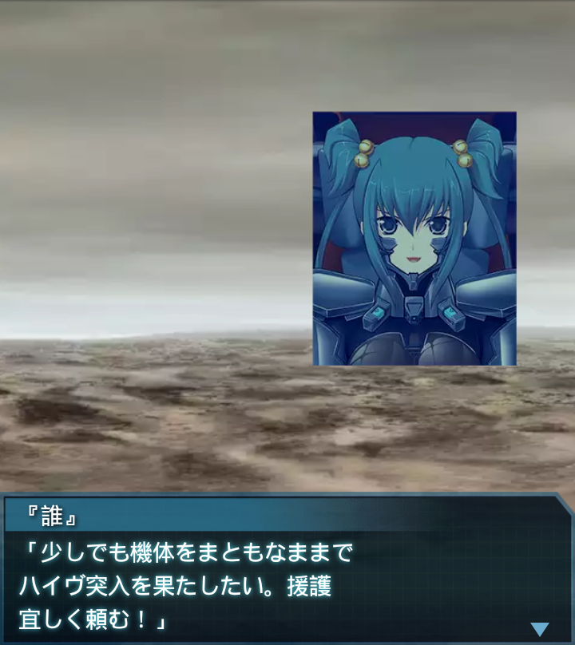
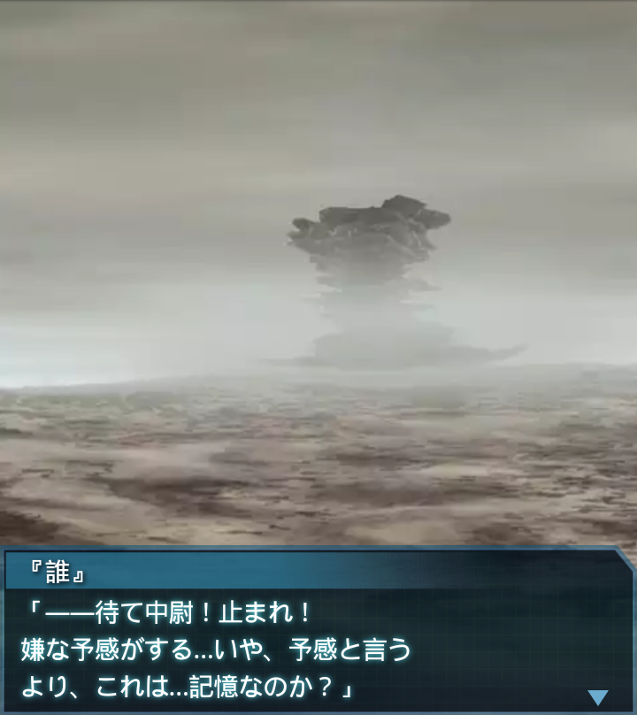

中国・オリジナルハイヴ地表1
リリア
「――こちらナイヴス１！
『誰』大尉、聞こえ
ますか！？」
『誰』
「どうしたナイヴス１！？」
リリア
「地下から突如出現したＢＥＴＡに
足止めを喰らっています！合流地点
への到達は少し遅れそうです」
『誰』
「了解！暴風１、援護に回って
くれ。俺とファング中隊は合流次第
先行して中の様子を探っておく」
崔亦菲
「了解。無理して奥まで突っ込んで
いかないでくださいね！」
『誰』
「分かってる。俺はそこまで欲張り
じゃないよ。それよりここで機体に
余計な負荷はかけたくない」

『誰』
「少しでも機体をまともなままで
ハイヴ突入を果たしたい。援護
宜しく頼む！」
崔亦菲
「分かってます！
それでは後ほどッ！！」

『誰』
「中隊全機、引き続き進め！」
篁唯依
「門まで２０００！
ＢＥＴＡ反応に特段の変化は
見られません！」
『誰』
「ハイヴ内のＢＥＴＡが特別多い
訳ではないと思っていいのか…？
最後まで油断せずに進もう」
篁唯依
「了解」
――ドクン！

『誰』
「――待て中尉！止まれ！
嫌な予感がする…いや、予感と言う
より、これは…記憶なのか？」
篁唯依
「記憶？それは他世界の自分の記憶
が共有されているという、例の現象
ですか？」
『誰』
「…ああ。だがこれを記憶と言って
いいのかどうか…脳裏に浮かんだ
のは見た事もないＢＥＴＡだ」
篁唯依
「どうしますか大尉？
ここで止まっていてもタイミングを
逸してしまいかねませんが…」

『誰』
「進むさ。何が起きようとも、それ
以外に我々が採るべき選択は
ないんだから」
『誰』
「但し、くれぐれも慎重に行こう。
センサー類には最新の注意を
払ってくれ」
篁唯依
「了解…」